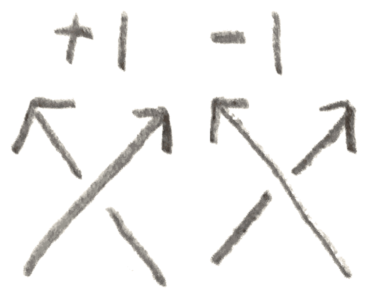

A knot is a circle inside \(3\)-dimensional space. A link is a collection of knots.
Given a knot or link, we can look at it from an angle and try to draw a line
corresponding to what we see. However whatever we see will not necessarily determine
what our knot was, because the knot may cross over itself when viewed from the
angle we are looking at it from. To fix this, we also need to put the crossing
information in our drawing, namely whenever two strands pass through each other,
we need to say which strand goes above which other strand. Such a drawing
is called a projection of our knot or link. Examples of projections are shown
below:
Figure 1:Some knots. \(3_1\) is also knot as the trefoil knot, and \(4_1\) is also known as the figure
eight knot
.
We say that two knots are equivalent if you can move around one knot without
intersecting itself to get the other. Knot theory is about studying knots up to
equivalence. For example, the knot below is not really knotted at all, indeed after
moving it around, we can see that its projection is a circle. This knot is called the
unknot.
How can we go between projections of a knot? A theorem of Reidmeister says that apart
from moving around strands in ways that don’t affect the crossings, there are \(3\)-moves that
get between any two projections, shown in Figure 2.
Figure 2:
Thus if we want to study links, it suffices to study projections of links up to doing
Reidmeister moves. Here is an example of one way to do that. We say that a
link is \(3\)-colorable if we can give each arc in the diagram one of three colors
such that all colors are used, and such that at each crossing the three different
strands that meet either all have the same color, or all have different colors. The
pictures below show that our ability to \(3\)-color is invariant under the Reidmeister
moves:
Figure 3:A proof that \(3\)-colorability is an invariant of a link.
Moreover, the trefoil is \(3\)-colorable, and the unknot is not, so we have proved:
Theorem 1.1.The trefoil knot is not the same as the unknot.
Another link invariant the crossing number, or the smallest number of crossings that
a knot can possibly have. This, unlike \(3\)-colorability, is not as easy to compute, but has the
property that the only crossing number \(0\) knot is the unknot.
However, there is a special type of knot for which it is not as hard to compute, the
alternating knots. These are the knots that have a diagram such that if we move along a
strand of the knot, the strand will alternate at each crossing between being over or
under the perpendicular strand. For example, the trefoil and the figure \(8\) knot are
alternating, and indeed many small knots are (for example those with crossing
number less than \(8\)), but as the knots get more complicated, fewer knots become
alternating.
Namely, suppose we have a diagram for an alternating knot that is reduced, i.e. it has
no unnecessary crossings. An unnecessary crossing is one that separates the knot diagram
into two pieces. Here are some examples of alternating diagrams that are and aren’t
reduced:
Figure 4:The diagram on the top is reduced and alternating, and the diagram on
the bottom is alternating, but not reduced, as the crossing in the center separates
the diagram into two pieces. If we untwist that crossing, we get the diagram on the
top.
Given an alternating diagram, we can make it become reduced by untwisting it at any
crossing that separates it into two pieces. It is easily seen that the resulting diagram is still
alternating. It was conjectured by Tait in the \(19^{th}\) century that a reduced alternating
diagram of a knot has the minimal number of crossings. The goal will be to prove
this.
2. The Jones Polynomial
To prove this result, we will use a knot invariant called the Jones polynomial. It is a
Laurent polynomial in the variable \(t^{1/2}\), and for an alternating knot will be able to tell us the
crossing number of the knot.
To construct the Jones polynomial, we will first construct the Kauffman bracket. This is
only an invariant of a diagram of the knot, not the knot itself. It is defined by the axioms
shown below:
Figure 5: The axioms defining the Kauffman bracket of a knot. In other words,
the unknot has bracket \(1\), adding a disjoint unknot multiplies the bracket by \(q+q^{-1}\), and
“resolving” a crossing of a link in two different ways gives a relation on the Kauffman
bracket.
We can compute how it changes under the Reidmeister moves in Figure 6.
Figure 6: Shown above are computations to see how the Kauffman bracket changes
with the Reidmeister moves.
To get an actual knot invariant out of it, we must orient the knot \(K\), i.e. choose a
direction to move along the strand. Let \(n_+\) be the number of positive crossings, and \(n_-\) the
number of negative crossings. The convention to decide whether a crossing is positive or
negative is shown in Figure 7.

Figure 7: Shown above is the convention for deciding whether a crossing of an
oriented knot is positive or negative.
Then by our computation of how the Kauffman bracket changes under the Reidmeister
moves, for an oriented knot \(K\) with diagram \(D_K\), the formula \(J(K)= (-1)^{n_-}q^{n_+-2n_-}\langle D_K\rangle \) gives a knot invariant of \(K\) called
the Jones polynomial of \(K\).
To compute the Jones polynomial, we consider all resolutions of the knot. Namely,
crossing has two resolutions, the \(0\) and \(1\)-resolutions, where we replace the crossing with one
of the pictures shown in Figure 8.
Figure 8: The two different types of resolutions.
By looking at all possible resolutions and using the axioms, let’s compute the trefoil’s
Jones polynomial.
Figure 9: We compute the Jones polynomial of the left-handed trefoil from above as
\(-q^{-6}((q+q^{-1})^2-3q(q+q^{-1})+3q^2-q^3(q+q^{-1})) = q^{-2}+q^{-6}-q^{-8}\).
The Jones polynomial tells us something about the crossing number of a link. Namely,
let the breadth of a Laurent polynomial \(p\) be the largest difference in exponent of nonzero
terms in \(J(L)\), which we will denote \(b(p)\). Note that if \(D_K\) is a knot diagram for \(K\), then \(b\langle D_K\rangle = b(J(K))\) is an invariant
of the knot. We will soon see that the breadth of the Jones polynomial generally gives a
lower bound on crossing number.
By looking at the Jones polynomial of the trefoil, we see that we must have \(c(3_1) = 3\), as
\(6 = b(3_1) \leq 2c(K) \leq 6\).
This is a general phenomenon that holds for reduced alternating diagrams. The proof
is to examine carefully our computation for the trefoil, and see that the same
kind of computation will happen in any reduced alternating diagram. Namely,
let us consider which terms can possibly contribute the largest and smallest
powers of \(q\) to the Jones polynomial. Certainly the resolution consisting of only \(1\)s
is always one of them. To see this, first note that as you change the number
of \(1\)s in the resolution, the number of unknotted components of the resolution
changes by exactly \(1\). Moreover, adding more \(0\)s will reduce the power of \(q\) that the
resolution contributes. Now two things very special happen for reduced alternating
diagrams.
Lemma 2.1.For a connected link diagram, the sum of the number of circles in theresolution with only \(1\)s and only \(0\)s is at most \(n+2\), with equality holding for an alternatingdiagram. In particular, \(b(J(K)) \leq 2c(K)\).
Proof.The second statement follows from the first, since if we resolve all the
crossings, the highest and lowest powers of \(q\) can come from the resolutions with only
\(0\)s or only \(1\)s. Then there are \(n+2\) circles in total for these two resolutions, and since there
are \(n\) crossings, the difference in \(q\) power that we get is \(n+2-1-1+n = 2n\), so \( 2c(K) \geq b(J(K))\).
For an alternating diagram, If suffices to prove that for each region that the knot
diagram divides the plane into, there is a unique circle in either the all \(1\)s or \(0\)s resolution
that yields it. If we consider the bounding circle on each region, since the knot is
alternating, it coincides with one of the resolutions of the knot. Moreover, since the
boundary of each of the regions touches each part of the knot twice, this gives a
bijective correspondence.
More generally, for any connected diagram, we can prove this by induction on the
number of crossings. It is true for the standard unknot diagram, and if it is true for
all connected diagrams with \(< n\) crossings, and we have a diagram, with \(n\) crossings, we
can choose any crossing, and do its \(1\) and \(0\) resolution. Note first that by induction
one of these yields a connected diagram, say the \(0\)-resolution. Then let \(i_j\) denote the
number of circles for the resolution where on the first crossing we do the \(i^{th}\) resolution,
and on the rest of the crossings we do the \(j^{th}\) resolution. Then we have by induction
that \(0_0+0_1 \leq n+1\) and \(|0_1-1_1|=1\) since they differ by one resolution. Then \(0_0+1_1 \leq n+2\). □
Lemma 2.2.For a reduced alternating diagram, the resolution with all \(1\)s has morecomponents than the one with all but one \(1\)s, and similarly the resolution with all \(0\)shas more components than all any with all but one \(0\).
Proof.The proof for the resolution with all \(0\)s is exactly the same, just use the knot
where all the crossings are switched. Now suppose that all the crossings are resolved
with the \(1\) resolutions. Now suppose that there is a crossing that we can change that
separates a region into two regions. Then that circle looks like the circle below (we
imagine it bounding the region outside of it):
Figure 10: The circle at top (which we imagine as bounding the region of the knot
outside of it) splits into two when we change the resolution.
I claim that by doing the \(0\) resolution to this crossing, the knot becomes disconnected.
This is because since the two sides were originally in the same circle, and the interior of
the circle is a region not touching the knot, so there is a path not touching the knot
going from one side of the crossing to the other. Then by completing the path by
making it intersect the crossing, we have split our knot into two pieces, so it is not
reduced.
Figure 11: In the situation above, we can draw a circle as shown here to split the
knot into two pieces, demonstrating that it isn’t reduced.□
Theorem 2.3.Let \(D_K\) be an alternating knot diagram for \(K\). Then \(D_K\) has the minimal number ofcrossings.
Proof.Because of Lemma 2.2, by looking at how each resolution contributes to the
highest and lowest terms of the Jones polynomial of \(K\), we see that there are no other
terms that can cancel them out. Then we see that the inequality in Lemma 2.1 is an
equality. □
There is a faster way to compute the Jones polynomial. Namely, it satisfies the following
relation for \(3\) links \(L_0, L_+,L_-\) that look the same except near one crossing, they differ as shown in
Figure 12:
Figure 12:
It follows from the axioms of the Jones polynomial that these satisfy the relation shown
in Figure 13:
Figure 13:
This can be used to compute \(J(8_{22})\) (with some orientation) more quickly, and the result is \(-q^2+2-q^{-2}+2q^{-4}-q^{-6}+q^{-8}-q^{-10}\). \(b(J(8_{22})) = 14 < 16 = 2c(8_{22})\),
so it is not an alternating knot.